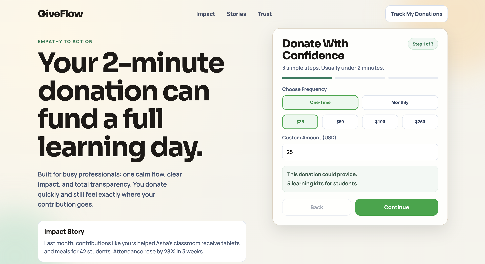
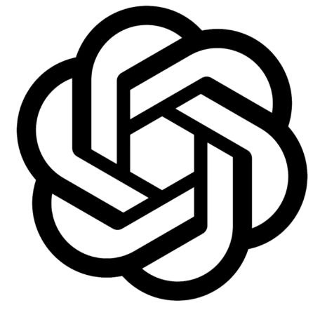
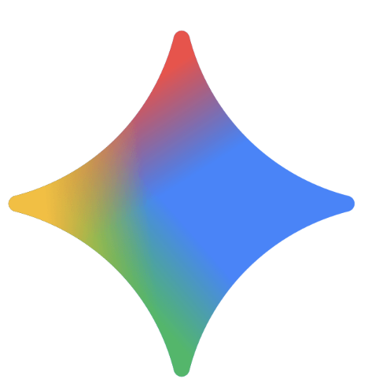
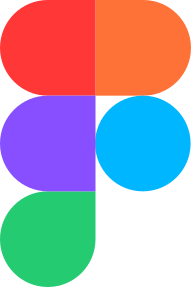
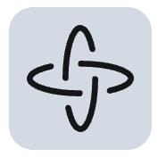
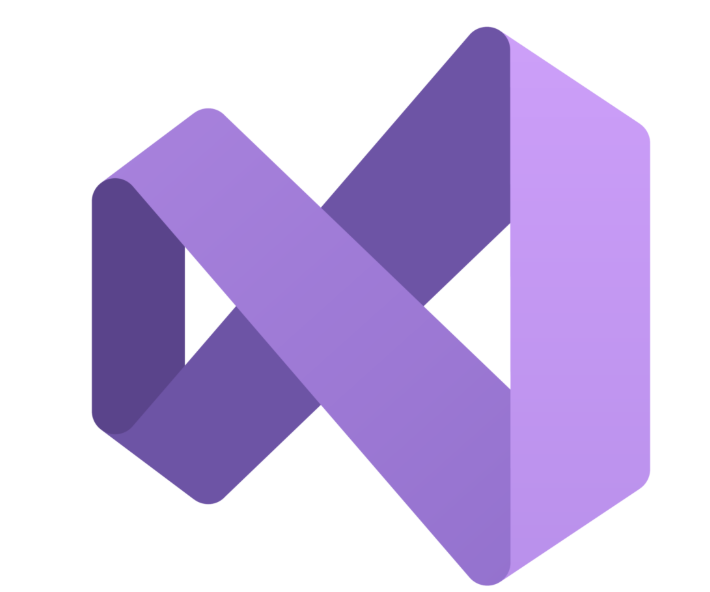
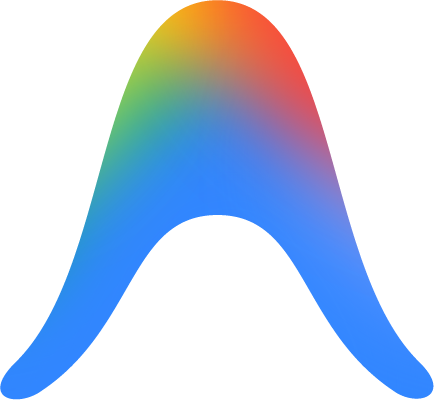
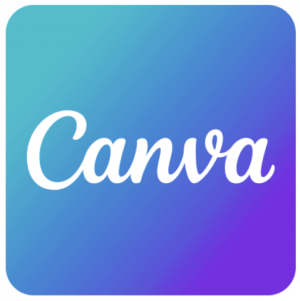

This product focused on to enable users to donate quickly and confidently, while making them feel emotionally rewarded, valued, and connected to the cause.

Moment of Giving Transforms to Memory of Impact
What is this product?
The brief
A busy user pauses to donate because they want their help to truly matter.
The page shares a simple, human story that makes the experience feel meaningful, not transactional.
The donation process is quick and easy, followed by sincere thanks and clear proof of impact. In the end,
the user feels they didn’t just donate—they genuinely made a difference.
This product turns giving into a meaningful experience that stays with the user long after they leave the page.
Outcome
30 - 40% Increase in donation completion
35% Reduction in time to donate
90% Reported emotional satisfaction
1. Research Phase
Time takem
16 hours
Tools used


Chat GPT, Google Gemini for Research
Figjam for White board collaboration and Fifma for initial level wireframesCurrent limitations addressed
Donation pages that feel cold, rushed, or transactional
Lack of clarity on where the money goes
Overly complex forms during time-sensitive moments
Generic “Thank you for your donation” messages
No follow-up or proof of impact
key challenge
The client aimed to create a charity donation payment experience that enables users to donate quickly while feeling emotionally rewarded and confident about their impact.
• The key challengewas not usability alone, but emotional hesitation.
• Users needed reassurance that their contribution truly mattered
Problem Statement
How might we design a donation flow that minimizes friction
while maximizing emotional reassurance, trust, and perceived impact -
Especially when users are donating during busy moments.
Summary
Core branches included:
User Intent, Emotional Triggers, Trust Signals, Transparency. Payment Simplicity, Post Donation Engagement.
This helped align emotional needs with functional requirements.Design Approach
• Emotional Design - led approach
• Supported by behavioral psychology principles.
• The experience was structured to move users from:
Empathy > Confidence > Action > Gratitude.
Potential Problems & Solutions
Hesitation before payment
Solved with impact stories and social proof.
Fear of complexitySolved using minimal steps and a stepper.
Lack of closureSolved with celebration and clear impact confirmation.
Product Story
• The product transforms donating from a transaction into a
meaningful moment.
• Users are guided through a calm, reassuring flow that celebrates their contribution and reinforceslong term emotional connection.
Competitor Analysis
• Most competitors focused heavily on speed and forms,
with minimal emotional feedback.
• Few provided meaningful post donation reinforcement or impact storytelling.
Research Findings & Opportunities
• Emotional reassurance increases completion.
• Users value transparency more than discounts.
• Gratitude moments improve recall and repeat intent.Low Fidelity Wireframe Sketches
• Wireframes focused on content hierarchy, emotional pacing,
and reducing cognitive load.
• Visual distractions were intentionally removed.
Hi Fidelity UI Direction
• A calm, warm visual system using soft colors, rounded components,
generous spacing, and gentle motion.
• The UI reinforces trust, empathy, and celebration.
Conclusion
This case study demonstrates how emotional design can elevate
a simple payment flow into a meaningful experience.
Driving both user satisfaction and business impact.
Live demo
2. Design Phase
Time takem
8 Hours!
Tools used

Figma Make AI for intial design - 5 minutes
Figma for customization -2 Hours
Open AI Codex for live application with design and code - 5 minutes

Visual studio for altrations- 1 hour
Google Antigravity for interaction customization - 1 hour
Adobe Illustrator for Vector Graphics - 1 hour

Canva for Graphic editing - 50 minutesLive demo - Figma make
Live demo - Final with Codex